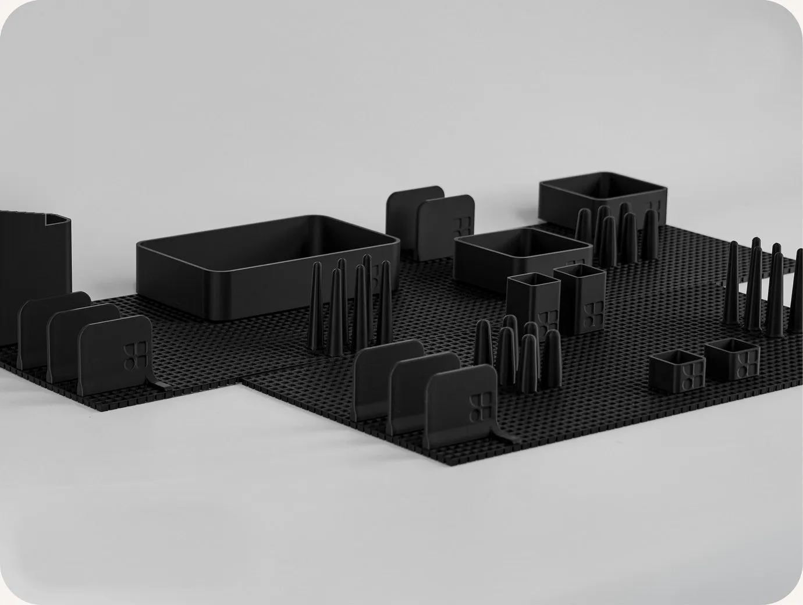
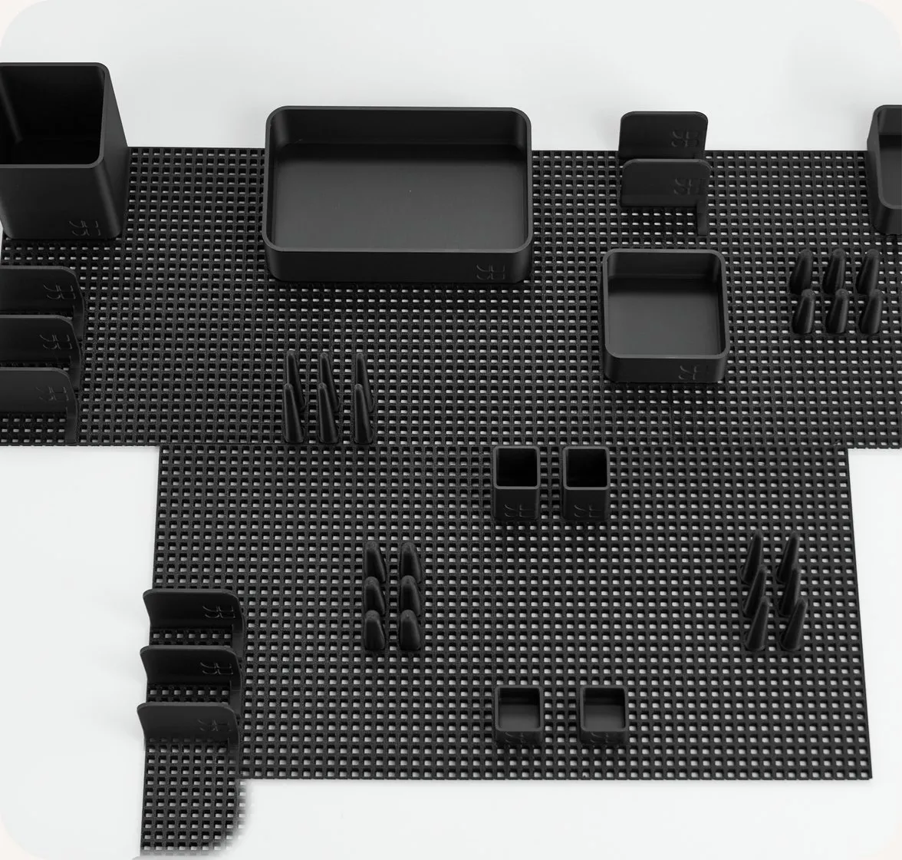
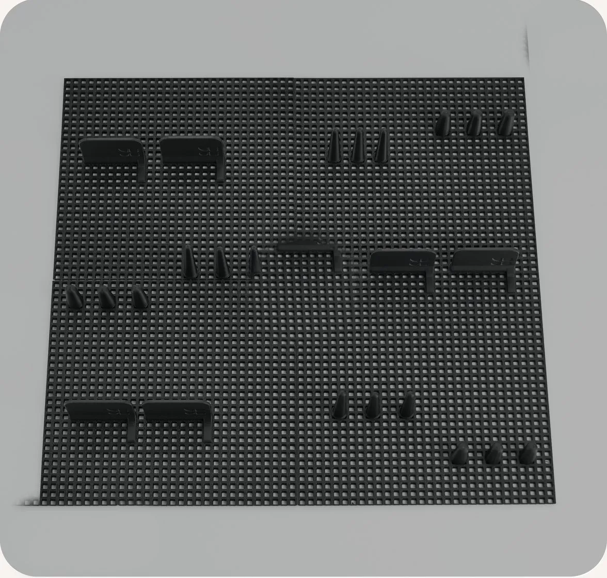

Каталог
11 елементів однієї модульної системи.
Комбінуй їх, щоб створити
конфігурацію під свій простір



Набір MAX
Максимум можливостей для великих шухляд: 65 деталей, які збираються під ваш простір.
-
65 деталей
у наборі -
Гнучка
конфігурація -
Основа
22 × 22 см
Підставка для телефону
у подарунок
до набору MAX · додається автоматично
1950 грн / 65 деталей
- Швидка доставка
- Надійна упаковка
- Порядок надихає

Набір MED
Золота середина для шухляд середнього розміру: 45 деталей для кухні, ванної чи робочого столу.
-
45 деталей
у наборі -
Гнучка
конфігурація -
Основа
22 × 22 см
1065 грн / 45 деталей
- Швидка доставка
- Надійна упаковка
- Порядок надихає

Набір MIN
Компактний старт для невеликої шухляди: 28 деталей, щоб спробувати систему.
-
28 деталей
у наборі -
Гнучка
конфігурація -
Основа
22 × 22 см
482 грн / 28 деталей
- Швидка доставка
- Надійна упаковка
- Порядок надихає
Склади систему під свій простір
Бокси, лотки, фіксатори та аксесуари поєднуються на одній платформі Pin Pin — обирай лише ті елементи, які потрібні твоїй конфігурації.
-
Подарунок
Набір MAX
1950₴
0 -
Набір MED
1065₴
0 -
Набір MIN
482₴
0 -
Base
80₴ / шт · від 4 шт
0 -
Pin short
4₴ / шт · від 9 шт
0 -
Pin long
4₴ / шт · від 9 шт
0 -
Wall
15₴ / шт · від 6 шт
0 -
Box LIP XS
20₴ / шт · від 2 шт
0 -
Box LIP S
30₴ / шт · від 2 шт
0 -
Box LIP M
70₴ / шт · від 2 шт
0 -
Box LIP L
120₴ / шт
0 -
Box S
160₴ / шт
0 -
Box L
206₴ / шт
0 -
Watch stand
150₴ / шт
0


Найчастіші запитання
Як зрозуміти, які модулі мені потрібні?
Це приклад тексту для заповнення макета. Він допомагає оцінити вигляд шрифту, довжину рядків, відступи та загальну композицію сторінки.
Чи підійде система під мою шухляду?
Це приклад тексту для заповнення макета. Він допомагає оцінити вигляд шрифту, довжину рядків, відступи та загальну композицію сторінки.
Чи можна докупити окремі модулі пізніше?
Це приклад тексту для заповнення макета. Він допомагає оцінити вигляд шрифту, довжину рядків, відступи та загальну композицію сторінки.
Скільки часу займає доставка?
Це приклад тексту для заповнення макета. Він допомагає оцінити вигляд шрифту, довжину рядків, відступи та загальну композицію сторінки.
Як доглядати за виробами?
Це приклад тексту для заповнення макета. Він допомагає оцінити вигляд шрифту, довжину рядків, відступи та загальну композицію сторінки.